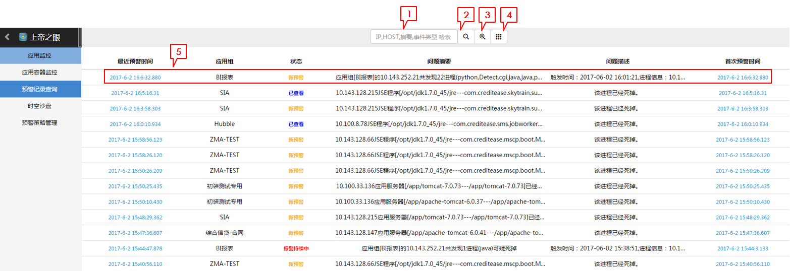
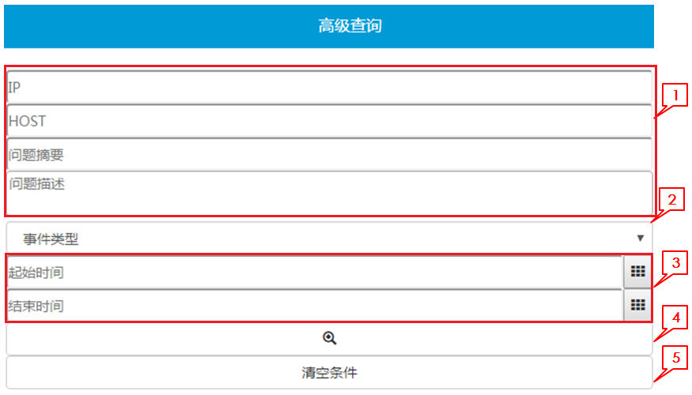

查看报警记录
当预警策略被触发后，除了触发报警动作，也会将预警信息存储下来供查询使用。 点击左侧栏预警记录查询进入预警列表视图。 
列表视图
1.检索输入框
输入IP，HOST，摘要，事件类型可过滤筛选记录，均为模糊匹配。
2.检索按钮
点击检索按钮进行搜索。
3.高级检索
点击高级检索按钮进入检索页面。
4.显示全部
点击显示全部预警。
5.预警概览栏
显示预警概览信息，点击可进入预警详情 最近预警时间：最近一次的预警时间 应用组：预警所属的应用组 状态：状态分为四种。
- 新预警：新的报警事件，初始状态
- 报警持续中：报警事件持续发生
- 已查看：有人已经查看过
- 已查看&报警持续中：已查看，但报警事件还在持续发生 问题摘要：预警问题的摘要信息 问题描述：问题简要描述 首次预警时间：第一次发生预警的时间
检索
列表视图页面点击高级检索按钮进入高级查询页面。 
1.查询项
非必填项，均为模糊匹配。
2.事件类型
预警事件的类型，有三个选项：
- RT.THRESHOLD: 实时数据或容器监控数据触发预警策略
- RT.CRASH: 进程Down了
- AppServer.ReAccessFail: 从应用中间件采集数据访问失败
3.起始结束时间
指预警事件的最近预警时间。
4.检索按钮
点击开始检索。
5.清空条件
点击清空查询条件。